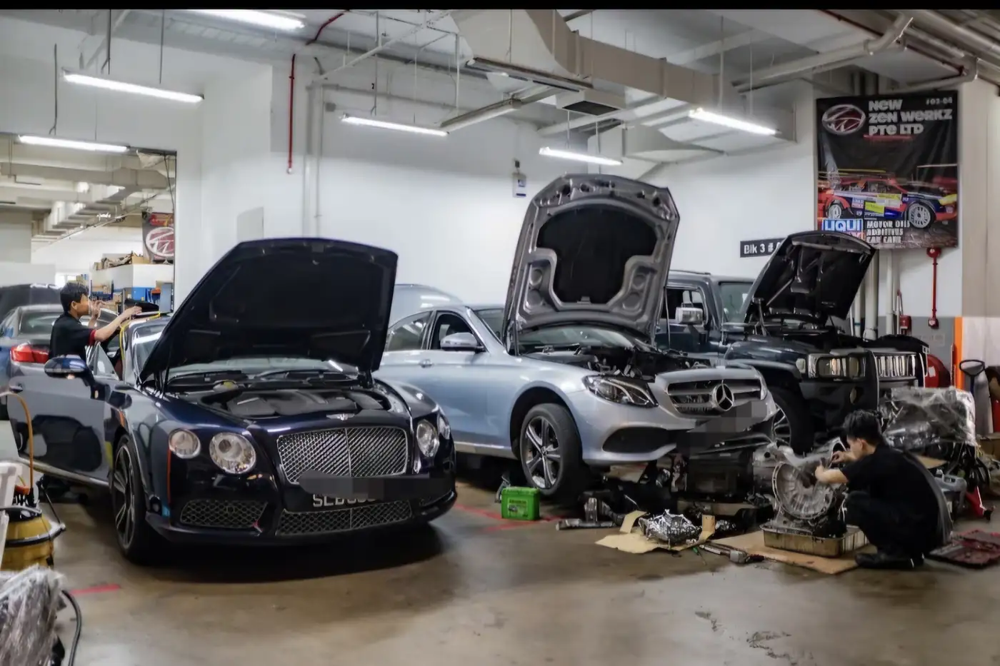

Featured (paid)Car battery replacement in Kaki Bukit Industrial Estate
9 workshops in Kaki Bukit Industrial Estate are listed for car battery replacement: New Zen Werkz, Antz Automobile, B Motor Works, CAS Garage, Nxpress Performance, Paul Hoe Batteries & Motor Services, Soon Huat Battery Co, Swift Tyre Specialist and VHOH Werkz. Each page shows the address, hours and how to contact the workshop.
Featured (paid) in Kaki Bukit Industrial Estate
Paid placements, shown on their own. They are not part of any ranking or order on this page.
Basic listing
Car battery
Antz Automobile
4.2 (56 Google ratings) (checked November 2026) See Google reviews
8 Kaki Bukit Ave 4, #02-45, Singapore 415875
General servicing and repair
Ranked 48th of 49 Kaki Bukit Industrial Estate workshops with 20 or more Google ratings, by rating and number of ratings together
Customers mention: Peugeot and Citroën repairs, Electrical fault diagnosis, Battery and starting issues
Basic listing
Car battery
B Motor Works
5.0 (20 Google ratings) (checked November 2026) See Google reviews
25 Kaki Bukit Rd 4, #03-40, Singapore 417800
General servicing and repair
Ranked 22th of 49 Kaki Bukit Industrial Estate workshops with 20 or more Google ratings, by rating and number of ratings together
Customers mention: BMW servicing, Fault diagnosis, Battery replacement
Basic listing
Car battery
CAS Garage
5.0 (59 Google ratings) (checked November 2026) See Google reviews
1 Kaki Bukit Ave 6, #02-20/21/22 AutoBay Block D, Singapore 417883
General servicing and repair
Ranked 5th of 49 Kaki Bukit Industrial Estate workshops with 20 or more Google ratings, by rating and number of ratings together
Customers mention: Fuel tank repair, Starter motor repair, Used-car restoration
Basic listing
Car battery
Nxpress Performance
5.0 (39 Google ratings) (checked November 2026) See Google reviews
68 Kaki Bukit Ave 6, #01-12 ARK @ KB, Singapore 417896
General servicing and repair
Ranked 11th of 49 Kaki Bukit Industrial Estate workshops with 20 or more Google ratings, by rating and number of ratings together
Customers mention: Engine rebuild, Car servicing, Battery and alternator replacement
Basic listing
Car battery
Paul Hoe Batteries & Motor Services
4.8 (29 Google ratings) (checked November 2026) See Google reviews
1 Kaki Bukit Ave 6, #01-109/107/32 Autobay@Kaki Bukit, Singapore 417883
General servicing and repair
Ranked 31th of 49 Kaki Bukit Industrial Estate workshops with 20 or more Google ratings, by rating and number of ratings together
Customers mention: Car battery replacement, EV 12V battery, Radiator repair
Basic listing
Car battery
Soon Huat Battery Co
3.0 (3 Google ratings) (checked November 2026) See Google reviews
8, Kaki Bukit Avenue 4 Premier@ Kaki Bukit #03-32 S( 415875, Singapore 415875
General servicing and repair
Customers mention: Battery replacement, Oil change, Starter and alternator repairs
Basic listing
Car battery
Swift Tyre Specialist
4.6 (387 Google ratings) (checked November 2026) See Google reviews
8 Kaki Bukit Ave 4, #06-41 Premier@kaki bukit, Singapore 415875
General servicing and repair
Ranked 46th of 49 Kaki Bukit Industrial Estate workshops with 20 or more Google ratings, by rating and number of ratings together
Customers mention: Tyres, Puncture repair, Battery replacement
Basic listing
Car battery
VHOH Werkz
4.9 (18 Google ratings) (checked November 2026) See Google reviews
25 Kaki Bukit Rd 4, #03-84, Synergy@KB 417800, Singapore 417800
General servicing and repair
Customers mention: Brake repair, Aircon flushing, Battery replacement
Open these workshops in Google Maps
More in this area: all workshops in Kaki Bukit Industrial Estate, or car battery replacement across Singapore.
About car battery replacement in Kaki Bukit Industrial Estate
Kaki Bukit is an industrial estate in the East region, around Kaki Bukit Avenue 4 and 6 and Kaki Bukit Road 2 and 4, with many workshops, trade units and parts suppliers.
Nearby areas on SG Car Workshop: Paya Ubi Industrial Park, Ubi Road 1, Bedok Industrial Park E.
Questions about car battery replacement in Kaki Bukit Industrial Estate
Which workshops offer car battery replacement in Kaki Bukit Industrial Estate?
SG Car Workshop lists New Zen Werkz, Antz Automobile, B Motor Works, CAS Garage, Nxpress Performance, Paul Hoe Batteries & Motor Services, Soon Huat Battery Co, Swift Tyre Specialist and VHOH Werkz for car battery replacement in Kaki Bukit Industrial Estate.
How do I contact a workshop in Kaki Bukit Industrial Estate?
Tap WhatsApp or Call on a workshop card or page. WhatsApp messages are prefilled with the workshop name and say you found them on SG Car Workshop, so you only need to add your car and what you need.
What is near Kaki Bukit Industrial Estate?
Nearby MRT stations include Kaki Bukit, Bedok Reservoir and Ubi. Local landmarks include Kaki Bukit Industrial Estate, Bedok Reservoir and Kaki Bukit Avenue 1.